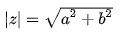

Python系列-1-基本数据类型
概述
最早接触到Python大概是在2009年，当时还在各大塞班（Symbina）论坛逛帖子，那时候大家都叫“大蟒蛇平台”，其实是python发音的一种音译。诺基亚的Symbina智能手机上支持C++和JAVA开发的两类程序， 装上Python后，也就可以支持众多以Python开发的各种程序了。曾经一度想自己编写，下载了论坛置顶资料，后来还是被不知道丢到哪里~
近两年python随着人工智能，数据分析，网络爬虫的火爆，python的天然优势又出来了，越来越多的人开始关注到python，其中包括我，十一年过去了，我又要“重新启航”了。
学习一门语言，先从基本数据类型开始吧。
Number-数字
整数
包括正整数与负整数，如：8，-100等, 整型是没有限制大小的，可以当做long类型使用（没有 python2 中的 Long）
2 进 制：以'0b'开头。例如：'0b11011'表示10进制的27
8 进 制：以'0o'开头。例如：'0o33'表示10进制的27
10进制：正常显示
16进制：以'0x'开头。例如：'0x1b'表示10进制的27
各进间数字进行转换（内置函数）：
bin(i)：将i转换为2进制，以“0b”开头。
oct(i)：将i转换为8进制，以“0o”开头。
int(i)：将i转换为10进制，正常显示。
hex(i)：将i转换为16进制，以“0x”开头。
浮点数
浮点数也就是小数，整数和浮点数在计算机内部存储的方式是不同的，整数运算永远是精确的（除法难道也是精确的？是的！），而浮点数运算则可能会有四舍五入的误差。浮点型也可以使用科学计数法表示（2.5e2 = 2.5 x 102 = 250）
布尔值
在 Python2 中是没有布尔型的，它用数字 0 表示 False，用 1 表示 True。到 Python3 中，把 True 和 False 定义成关键字了，但它们的值还是 1 和 0，它们可以和数字相加。注意大小写写法。
print(True == 1) # True
print(False == 0) # True
下列对象的布尔值是False：
None；False；0（整型），0.0（浮点型）；0L（长整形）；0.0+0.0j（复数）；“”（空字符串）；[]（空列表）；（）（空元组）；{}（空字典）
复数
Python可以表示复数，日常用到复数的不过，先复习下复数的相关概念：
把形如z=a+bi（a,b均为实数）的数称为复数，其中a称为实部，b称为虚部，i称为虚数单位，i2=-1;
将复数的实部与虚部的平方和的正的平方根的值称为该复数的模，记作
∣z∣

关于复数的理解可以查看底部参考文章来进一步了解。
我们回到Python语法中：
a=4.7+0.666j #定义一个虚数
print(a) #输出这个虚数
print(a.real) #输出实部
print(a.imag) #输出虚部
print(a.conjugate()) #输出该复数的共轭复数
运行结果：
(4.7+0.666j)
4.7
0.666
(4.7-0.666j)
除了直接定义外，还可以通过complex()，创建一个复数或者将一个数或字符串转换为复数形式：
complex(3.2,0.005) # (3.2+0.005j)
complex(1) # (1 + 0j)
complex('2+0.01j') # (2+0.01j)
CRUD
n=100 # Create
del n # Delete 删除变量
print(n) # 访问报错
随机函数
random标准库为Python提供了生成随机数的工具（以下方法使用时需import random）
| 函数名 | 描述 |
|---|---|
| choice(seq) | 从序列的元素中随机挑选一个元素，比如random.choice(range(10))，从0到9中随机挑选一个整数。 |
| randrange | ([start,] stop [,step]) 从指定范围内，按指定基数递增的集合中获取一个随机数，基数默认值为 1 |
| random() | 随机生成下一个实数，它在[0,1)范围内。 |
| seed([x]) | 改变随机数生成器的种子seed。如果你不了解其原理，你不必特别去设定seed，Python会帮你选择seed。 |
| shuffle(lst) | 将序列的所有元素随机排序 |
| uniform(x, y) | 随机生成下一个实数，它在[x,y]范围内。 |
数学函数
math标准库为Python提供了常用数学方法（以下方法除了abs,max,min,pow,round内置函数外，使用时均需import math）
| 函数名 | 描述 |
|---|---|
| abs(x) | 返回数字的绝对值, 如abs(-10) 返回 10 |
| max(x1, x2,…) | 返回给定参数的最大值，参数可以为序列。 |
| min(x1, x2,…) | 返回给定参数的最小值，参数可以为序列。 |
| pow(x, y) | x**y 运算后的值。 |
| round(x [,n]) | 返回浮点数 x 的四舍五入值，如给出 n 值，则代表舍入到小数点后的位数。其实准确的说是保留值将保留到离上一位更近的一端。 |
| ceil(x) | 返回数字的上入整数, 如math.ceil(4.1) 返回 5 |
| exp(x) | 返回e的x次幂(ex), 如math.exp(1) 返回2.718281828459045 |
| fabs(x) | 返回数字的绝对值, 如math.fabs(-10) 返回10.0 |
| floor(x) | 返回数字的下舍整数，如math.floor(4.9) 返回 4 |
| log(x) | 如math.log(math.e)返回1.0,math.log(100,10)返回2.0 |
| log10(x) | 返回以10为基数的x的对数，如math.log10(100)返回 2.0 |
| modf(x) | 返回x的整数部分与小数部分，两部分的数值符号与x相同，整数部分以浮点型表示。math.modf(3.1415)) 返回 (0.14150000000000018, 3.0) |
| sqrt(x) | 返回数字x的平方根。math.sqrt(100) 返回 10.0 |
| acos(x) | 返回x的反余弦弧度值。 |
| asin(x) | 返回x的反正弦弧度值。 |
| atan(x) | 返回x的反正切弧度值。 |
| atan2(y, x) | 返回给定的 X 及 Y 坐标值的反正切值。 |
| cos(x) | 返回x的弧度的余弦值。 |
| hypot(x, y) | 返回欧几里德范数 sqrt(xx + yy)。 |
| sin(x) | 返回的x弧度的正弦值。 |
| tan(x) | 返回x弧度的正切值。 |
| degrees(x) | 将弧度转换为角度,如degrees(math.pi/2) ， 返回90.0 |
| radians(x) | 将角度转换为弧度 |
数学常量
同样需要引入math标准库
| 常量名 | 描述 |
|---|---|
| pi | 数学常量 pi（圆周率，一般以π来表示）, math.pi |
| e | 数学常量 e，e即自然常数（自然常数）, math.e |
String-字符串
字符串是以单引号'或双引号"或者三引号'''括起来的任意文本，如果需要包含引号，请用转义符\,如：
print('Tom say:\"Hello!\"')
三引号支持换行
print('''
Hi Lili
Hi Tom''')
字符串的截取的语法格式为：变量[头下标:尾下标],+号拼接，*号复制：
str = 'Hello world'
print (str) # 输出字符串
print (str[0:-1]) # 输出第一个到倒数第二个的所有字符
print (str[0]) # 输出字符串第一个字符
print (str[2:5]) # 输出从第三个开始到第五个的字符
print (str[2:]) # 输出从第三个开始的后的所有字符
print (str * 2) # 输出字符串两次，也可以写成 print (2 * str)
print (str + "TEST") # 连接字符串
运行结果：
Hello world
Hello worl
H
llo
llo world
Hello worldHello world
Hello worldTEST
字符串元素不可被修改,如下操作会报错：
str = 'Hello world'
str[0]='C'
print(str) # TypeError: 'str' object does not support item assignment
f-string 格式化字符串以 f 开头，后面跟着字符串，字符串中的表达式用大括号 {} 包起来，它会将变量或表达式计算后的值替换进去
Bytes 类型
Python3 新增 bytes 类型，是指一堆字节的集合，十六进制表现形式，两个十六进制数构成一个 byte ，用带b前缀的单引号或双引号来表示。bytes通常用于网络数据传输、二进制图片和文件的保存等等。
Bytes 与 String 可以相关转换
举个例子：
b1 = bytes()
print(b1) # b''
str='你好'
result=str.encode(encoding='utf-8') # b'\xe4\xbd\xa0\xe5\xa5\xbd'
print(result)
print(result.decode(encoding='utf-8')) # 你好
转义与格式化
在需要在字符中使用特殊字符时，python用反斜杠\转义字符(同js)。
在 Python 中，字符串格式化使用与 C 中 sprintf 函数一样的语法。
print ("我叫 %s 今年 %d 岁!" % ('小明', 10)) # 我叫 小明 今年 10 岁!
CRUD
str='abc' # Create
print('p'+str[1:3]) # Update 无法修改，可以通过+号重新创建
print(str[0]) # Retrieve
del str # Delete 删除变量，不同于列表，集合，字典等，依旧可以访问
print(str) # <class 'str'>
f-string
f-string 是 python3.6 之后版本添加的，称之为字面量格式化字符串，是新的格式化字符串的语法。
之前我们习惯用百分号 (%):
name = "Jack"
print("My name is %s" %name) # My name is Jack
如果采用f-string表达更简单了（类似NodeJs中的模板字符串）
print(f"My name is {name}") # My name is Jack
String类型方法
| 方法名 | 描述 | 例子 |
|---|---|---|
| len(string) | 返回字符串长度 | 略 |
| lower() | 转换字符串中所有大写字符为小写 | 略 |
| upper() | 转换字符串中的小写字母为大写 | 略 |
| swapcase() | 将字符串中大写转换为小写，小写转换为大写 | 略 |
| capitalize() | 将字符串的第一个字符转换为大写 | 略 |
| title() | 返回”标题化”的字符串,就是说所有单词都是以大写开始，其余字母均为小写(见 istitle()) | 略 |
| join(seq) | 以指定字符串作为分隔符，将 seq 中所有的元素(的字符串表示)合并为一个新的字符串 | 以s='-'为例：s.join(('h','e','l','l','o')) : h-e-l-l-o s.join(['h','e','l','l','o'])：h-e-l-l-o s.join({'h','e','l','l','o'} : l-e-o-h(每次均不同) |
| center(width, fillchar) | 返回一个指定的宽度 width 居中的字符串，fillchar 为填充的字符，默认为空格(不能完全居中就有出现偏移) | 以s='[go]'为例： s.center(10,'*')：***[go]*** s.center(11,'*')：****[go]*** |
count(str, beg= 0,end=len(string)) |
返回 str 在 string 里面出现的次数，如果 beg 或者 end 指定则返回指定范围内 str 出现的次数 | "abab".count('ab')：2 "abab".count('ab',2,4)：1 |
bytes.decode(encoding="utf-8", errors="strict") |
Python3 中没有 decode 方法，但我们可以使用 bytes 对象的 decode() 方法来解码给定的 bytes 对象，这个 bytes 对象可以由 str.encode() 来编码返回 | ('好'.encode("UTF-8")).decode('UTF-8','strict') : 好 |
encode(encoding='UTF-8',errors='strict') |
以 encoding 指定的编码格式编码字符串，如果出错默认报一个ValueError 的异常，除非 errors 指定的是’ignore’或者’replace’ | "好".encode('UTF-8')：b'\xe5\xa5\xbd' "好".encode('GBK')：b'\xba\xc3' |
endswith(suffix, beg=0, end=len(string)) |
指定后缀结尾，如果是返回 True，否则返回 False，可选参数 “start” 与 “end” 为检索字符串的开始与结束位置 | 'abc!!'.endswith('!!',3,5) ：True |
| expandtabs(tabsize=8) | 把字符串 string 中的 tab 符号 \t转为空格，tab 符号默认的空格数是 8 |
略 |
| find(str, beg=0, end=len(string)) | 检测 str 是否包含在字符串中，如果指定范围 beg 和 end ，则检查是否包含在指定范围内，如果包含返回开始的索引值，否则返回-1 | "abcd".find('ab',0,1) ：-1 |
| index(str, beg=0, end=len(string)) | 跟find()方法一样，只不过如果str不在字符串中会报一个异常 | "abcd".find('ab',0,1) ：报错 |
| rfind(str, beg=0,end=len(string)) | 类似于 find()函数，不过是从右边开始查找 | 略 |
| rindex( str, beg=0, end=len(string)) | 类似于 index()，不过是从右边开始 | 略 |
| isalnum() | 如果字符串至少有一个字符并且所有字符都是字母或数字则返 回 True，否则返回 False | 略 |
| isalpha() | 如果字符串至少有一个字符并且所有字符都是字母或中文字则返回 True, 否则返回 False | 略 |
| isdigit() | 如果字符串只包含数字则返回 True 否则返回 False | 略 |
| isnumeric() | 如果字符串中只包含数字字符，则返回 True，否则返回 False | 略 |
| islower() | 如果字符串中包含至少一个区分大小写的字符，并且所有这些(区分大小写的)字符都是小写，则返回 True，否则返回 False | 略 |
| isspace() | 如果字符串中只包含空白，则返回 True，否则返回 False | 略 |
| istitle() | 如果字符串是标题化的(见 title())则返回 True，否则返回 False | 略 |
| isupper() | 如果字符串中包含至少一个区分大小写的字符，并且所有这些(区分大小写的)字符都是大写，则返回 True，否则返回 False | 略 |
| ljust(width[, fillchar]) | 返回一个原字符串左对齐,并使用 fillchar(默认为空格) 填充至长度 width 的新字符串, 如果指定的长度小于原字符串的长度则返回原字符串 | "abcd".ljust(10,'@')：abcd@@@@@@ |
| rjust(width,[, fillchar]) | 同ljust，不同的是返回一个右对齐的原字符串 | 略 |
| lstrip([chars]) | 截掉字符串左边的空格或指定字符(默认截掉左边空格)。 | "111abcd11".lstrip('1')：abcd11 |
| rstrip([chars]) | 功能同 lstrip ，不过截取的为字符串右边空格或指定字符 | 略 |
| strip([chars]) | 在字符串上执行 lstrip()和 rstrip() | 略 |
| max(str) | 返回字符串 str 中最大的字母 | 略 |
| min(str) | 返回字符串 str 中最小的字母 | 略 |
| replace(old, new [, max]) | 把 将字符串中的 str1 替换成 str2,如果 max 指定，则替换不超过 max 次 | |
split(str="", num=string.count(str)) |
通过指定分隔符对字符串进行切片，如果第二个参数 num 有指定值(默认全部分隔)，则分割为 num+1 个子字符串 | s=”a1bc1d” s.split('1',1)：['a', 'bc1d'] s.split('1',5)：['a', 'bc', 'd'] |
| splitlines([keepends]) | 按照行('\r', '\r\n', \n')分隔，返回一个包含各行作为元素的列表，如果参数 keepends 为 False，不包含换行符，如果为 True，则保留换行符。 |
'ab c\n\nde fg\rkl\r\n'.splitlines(): ['ab c', '', 'de fg', 'kl'] |
| startswith(substr, beg=0,end=len(string)) | 检查字符串是否是以指定子字符串 substr 开头，是则返回 True，否则返回 False。如果beg 和 end 指定值，则在指定范围内检查 | "abcd".startswith('cd',2,4)) : True |
| maketrans() | 创建字符映射的转换表，对于接受两个参数的最简单的调用方式，第一个参数是字符串，表示需要转换的字符，第二个参数也是字符串表示转换的目标 | trantab = str.maketrans("aeiou", "12345") (一般与translate搭配使用) |
| translate(table, deletechars=””) | 根据 str 给出的表(包含 256 个字符)转换 string 的字符, 要过滤掉的字符放到 deletechars 参数中 | "this is string example".translate(trantab) : th3s 3s str3ng 2x1mpl2 |
| zfill (width) | 返回长度为 width 的字符串，原字符串右对齐，前面填充0 | "abcd".zfill(10)：000000abcd "abcd".zfill(1) ：abcd |
| isdecimal() | 检查字符串是否只包含十进制字符，如果是返回 true，否则返回 false(方法只存在于unicode对象) | "abcd".isdecimal()：True "100".isdecimal()：False |
List-列表
List（列表） 是 Python 中使用最频繁的数据类型。
列表是写在方括号 [] 之间、用逗号分隔开的元素列表。与Javascript中的数组非常相似。列表同样可以被索引和截取，列表被截取后返回一个包含所需元素的新列表。
操作与字符串很多相似之处:
list = [1,0.02,True,'Hi']
print(list[3])
print(list[0:-1])
print(list*2)
print(list+['Tom'])
print(list[0:3])
print(list[0:3:2]) #截取可以接收第三个参数，参数作用是截取的步长
运行结果：
Hi
[1, 0.02, True]
[1, 0.02, True, 'Hi', 1, 0.02, True, 'Hi']
[1, 0.02, True, 'Hi', 'Tom']
[1, 0.02, True]
[1, True]
列表的元素不同于字符串，元素是可以被修改的
list = [1,0.02,True,'Hi']
list[0]='c'
print(list)
运行结果：
['c', 0.02, True, 'Hi']
CURD
废话不说，上代码：
ls=[1,2,3] # Create
ls[0]=0 # Update
print(ls[0]) # Retrieve
del ls[2] # Delete
print(ls) # [0, 2]
del ls # 删除变量，访问ls会报错
List类型方法
设置ls=[1,2,1]，有如下表格：
| 方法名 | 描述 | 例子 |
|---|---|---|
| list.append(obj) | 在列表末尾添加新的对象，返回None | ls.append((2,0)) ： [1,2,1,(2, 0)] |
| list.count(obj) | 统计某个元素在列表中出现的次数，返回次数 | ls.count(1) ：2 |
| list.extend(seq) | 在列表末尾一次性追加另一个序列中的多个值,返回None | ls.extend((2,0)) ： [1,2,1,2,0] |
| list.index(obj) | 从列表中找出某个值第一个匹配项的索引位置,返回索引 | ls.index(1) ：0 |
| list.insert(index,obj) | 将对象插入列表,返回为None | ls.insert(1,-10) ：[1, -10, 2, 1] |
| list.pop(index=-1) | 移除列表中的一个元素（默认最后一个元素），并且返回该元素的值 | ls.pop(0) ：[2,1] |
| list.remove(obj) | 移除列表中某个值的第一个匹配项,返回为None | ls.remove(1) ：[2,1] |
| list.reverse() | 反向列表中元素,返回为None | ls.reverse() ：[1,2,1] |
| list.sort(key=None, reverse=False) | key用来进行比较的元素;reverse :True降序,False升序（默认），返回None | ls.sort() ：[1,1,2] |
| list.clear() | 清空列表，返回None | ls.clear() ：[] |
| list.copy() | 复制列表，返回复制后的新列表(非指针) | ls.copy() ：[1,2,1] |
Tuple-元组
元组（tuple）与列表类似，不同之处在于元组的元素不能修改。
元组写在小括号 () 里，元素之间用逗号隔开（可以把字符串看作一种特殊的元组）
tup = (1, 2, '3', 4.1, 5, 6)
tup1 = () # 空元组
tup2 = (20,) # 一个元素，需要在元素后添加逗号
tup3 = (20) # 一个元素，不加逗号就变成的Number类型
print(tup[0]) # 1
print(tup1) # ()
print(type(tup2)) # <class 'tuple'>
print(type(tup3)) # <class 'int'>
CURD
相比列表，元组是无法修改的，所以只能更新出新元组
tup=(1,2,3) # Create
print(tup + (4,5)) # tup[0]=0 会报错
print(tup[0]) # Retrieve
del tup # del tup[2] 会报错 且删除后变量tup就不存在了
Set-集合
集合（set）是由一个或数个形态各异的大小整体组成的，构成集合的事物或对象称作元素或是成员。基本功能是进行成员关系测试和删除重复元素。
可以使用大括号 { } 或者 set() 函数创建集合。不过创建一个空集合必须用 set() 而不是 { }，因为 { } 是用来创建一个空字典
sites = {'b', 'a', 'b', 'a', 'y'}
sitea = set(['b','a','t','t','l','e'])
print(sites) # 输出集合，重复的元素被自动去掉
print(sitea)
print(sites - sitea) # a 和 b 的差集
print(sites | sitea) # a 和 b 的并集
print(sites & sitea) # a 和 b 的交集
print(sites ^ sitea) # a 和 b 中不同时存在的元素
运行结果：
{'y', 'b', 'a'}
{'e', 'l', 'a', 't', 'b'}
{'y'}
{'e', 'l', 'a', 't', 'b', 'y'}
{'b', 'a'}
{'y', 't', 'e', 'l'}
集合本身是一个无序的不重复元素序列，并不支持索引操作。
CURD
集合本身不支持索引操作，常用操作中只剩下删除操作支持
s={1,2,3}
print(s)
del s
Set类型方法
以set={1,2,1}为例，有如下表格：
| 方法名 | 描述 | 例子 |
|---|---|---|
| set.add(ele) | 为集合添加元素(只能添加Sting或Number)，返回None | set.add('5') ：{1, 2, ‘5’} |
| set.clear() | 移除集合中的所有元素，返回None | set.clear() ：set() |
| set.copy() | 拷贝一个集合 返回复制后的新集合(非指针) | set.copy() ：{1, 2} |
| set.update(obj) | 给集合添加元素 | set.update({3,1,5}) ：{1, 2, 3, 5} |
| set.pop() | 随机移除元素,返回被删除的元素 | set.pop() ：{} |
| set.remove(item) | 移除指定元素(元素不存在会报错) | set.remove(2) ：{1} |
| set.difference(s) | 返回多个集合的差集，元素包含在集合 set中,但不在集合s中 | set.difference({2,4}) ：{1} |
| set.difference_update(s) | 移除两个集合都包含的元素,返回None | set.difference_update({2,4}) ：{1} |
| set.discard(calue) | 删除集合中指定的元素（功能等同remove,但不存在元素时不会报错） | set.discard(4) :{1,2} |
| set.intersection(set1, set2 … etc) | 返回两个或更多集合中都包含的元素，即交集 | 自行测试 |
| set.intersection_update() | 获取两个或更多集合中都重叠的元素，不同于intersection，该方法会修改原始集合。 | 自行测试 |
| set.isdisjoint(s) | 判断两个集合是否包含相同的元素，s中是否有包含集合set的元素,不包含返回 True，否则返回 False。 | 自行测试 |
| set.issubset(s) | 用于判断集合的所有元素是否都包含在指定集合中，即 set 的所有元素是否都包含在集合 s 中,是则返回True，否返回False | 自行测试 |
| set.issuperset(s) | 判断指定集合的所有元素是否都包含在原始的集合中, 即s 的所有元素是否都包含在集合 set 中，都包含返回True,否返回False | 自行测试 |
| set.symmetric_difference(s) | 返回两个集合中不重复的元素集合，即会移除两个集合中都存在的元素(返回新集合) | 自行测试 |
| set.symmetric_difference_update(s) | 原始集合set 中移除与 s 集合中的重复元素，并将不重复的元素插入到集合 set 中 | 自行测试 |
| set.union(set1, set2…) | 返回两个或多个集合的并集，即包含了所有集合的元素，重复的元素只会出现一次 | 自行测试 |
Dictionary-字典
字典（dictionary）是Python中另一个非常有用的内置数据类型。是一种映射类型，字典用 { } 标识，它是一个无序的 键(key) : 值(value) 的集合,非常类似Javascript中的对象（key如果为String类型就必须用引号，这点与js不同）。
列表是有序的对象集合，字典是无序的对象集合。两者之间的区别在于：字典当中的元素是通过键来存取的，而不是通过偏移存取。
dicta={'name':'jack','age':12}
dictb=dict([('name','tom'),('job','worker')])
print(dicta)
print(dicta.keys())
print(dicta.values())
print(dictb)
print(dicta['name'])
运行结果：
{'name': 'jack', 'age': 12}
dict_keys(['name', 'age'])
dict_values(['jack', 12])
{'name': 'tom', 'job': 'worker'}
jack
CURD
与列表非常类似，因为字典键值的唯一性与不可变性，通过键值来进行索引（键必须不可变，所以可以用数字，字符串或元组充当，而用列表就不行）
dict={'name':'Tom','age':12} # Create
dict['name']='Jack' # Update
print(dict['name']) # Retrieve
del dict['age'] # Delete
print(dict) # {'name': 'Jack'}
del dict # 删除变量，访问dict会报错
Dictionary类型方法
以dit={'s':"Tom",1:'14'}为例，有如下表格：
| 方法名 | 描述 | 例子 |
|---|---|---|
| dict.clear() | 删除字典内所有元素，返回None | dit.clear() ：{} |
| dict.copy() | 返回一个字典的浅复制, 深拷贝父对象（一级目录），子对象（二级目录）不拷贝，还是引用（赋值操作只是复制了一个指针） | dit.copy()：{'s':'Tom', 1:'14'} |
| dict.fromkeys(seq[, value]) | 创建一个新字典，以序列 seq 中元素做字典的键，value 为字典所有键对应的初始值 | dict.fromkeys((1,2,3),0): {1: 0, 2: 0, 3: 0} (注意必须通过dict实例或者dict类名来调用) |
| dict.get(key, default=None) | 返回指定键的值，如果键不在字典中返回默认值。 | dit.get('s')：Tom dit.get('t')：None |
| dict.setdefault(key, default=None) | 与get类似，如果键不已经存在于字典中，将会添加键并将值设为默认值(不同于get,该方法会修改dict) | dit.setdefault(2) ：{'s': 'Tom', 1: '14', 2: None} |
| key in dict | in 操作符用于判断键是否存在于字典中，存在返回True，否则返回False | 's' in dit：True |
| key not in dict | not in 操作符与in正好相反 | 's' not in dit：False |
| dict.items() | 以列表返回可遍历的(键, 值) 元组数组 | dit.items() : dict_items([('s', 'Tom'), (1, '14')]) |
| dict.keys() | 返回一个可迭代对象，可以使用 list() 来转换为列表 | list(dit.keys()) ：['s', 1] |
| dict.update(dict2) | 字典参数 dict2 的 key/value(键/值) 对更新到字典 dict 里，返回None，直接修改dict | dit.update({'t':0}：{'s': 'Tom', 1: '14', 't': 0} |
| dict.values() | 返回一个迭代器，可以使用 list() 来转换为列表，列表为字典中的所有值 | ：dict_values(['Tom', '14']) |
| pop(key[,default]) | 删除字典给定键 key 所对应的值，返回值为被删除的值,如果key值不存在，则返回default，否则就报错 | dit.pop('s',99)：Tom(如果s不存在则会返回99，否则报错) |
| popitem() | 删除字典中的最后一对键和值, 并返回删除的键值（元组） | dit.popitem() : (1, '14') |